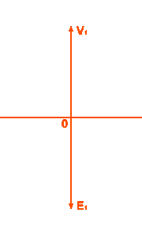

Definition of Ideal Transformer
An ideal transformer is an imaginary transformer which does not have any loss in it, means no core losses, copper losses and any other losses in transformer. Efficiency of this transformer is considered as 100%.
Ideal Transformer Model
Ideal transformer model is developed by considering a transformer which does not have any loss. That means the windings of the transformer are purely inductive and the core of transformer is loss free. There is zero leakage reactance of transformer. As we said, whenever we place a low reluctance core inside the windings, maximum amount of flux passes through this core, but still there is some flux which does not pass through the core but passes through the insulation used in the transformer. This flux does not take part in the transformation action of the transformer. This flux is called leakage flux of transformer. In an ideal transformer, this leakage flux is also considered nil. That means, 100% flux passes through the core and links with both the primary and secondary windings of transformer. Although every winding is desired to be purely inductive but it has some resistance in it which causes voltage drop and I2R loss in it. In such ideal transformer model, the windings are also considered ideal, that means resistance of the winding is zero.

Now if an alternating source voltage V1 is applied in the primary winding of that ideal transformer, there will be a counter self emf E1 induced in the primary winding which is purely 180° in phase opposition with supply voltage V1.

For developing counter emf E1 across the primary winding, it draws electric current from the source to produce required magnetizing flux. As the primary winding is purely inductive, that electric current 90° lags from the supply voltage. This electric current is called magnetizing electric current of transformer Iμ.

This alternating electric current Iμ produces an alternating magnetizing flux Φ which is proportional to that electric current and hence in phase with it. As this flux is also linked with secondary winding through the core of transformer, there will be another emf E2 induced in the secondary winding, this is mutually induced emf. As the secondary is placed on the same core where the primary winding is placed, the emf induced in the secondary winding of transformer, E2 is in the phase with primary emf E1 and in phase opposition with source voltage V1.
The above chapter was about a brief discussion about ideal transformer, it has also explained the basic ideal transformer model.
 by
by